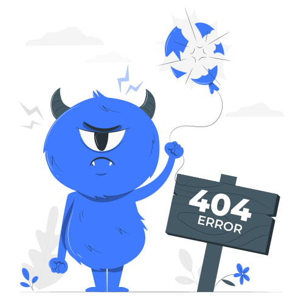

<div class="elements-section">
  <div class="search-bar">

  </div>
  <ng-container *ngIf="categories.length === 0">
    
  </ng-container>
  <div class="job-card-list">
    <app-category-card *ngFor="let category of categories" [category]="category"></app-category-card>
  </div>
</div>
